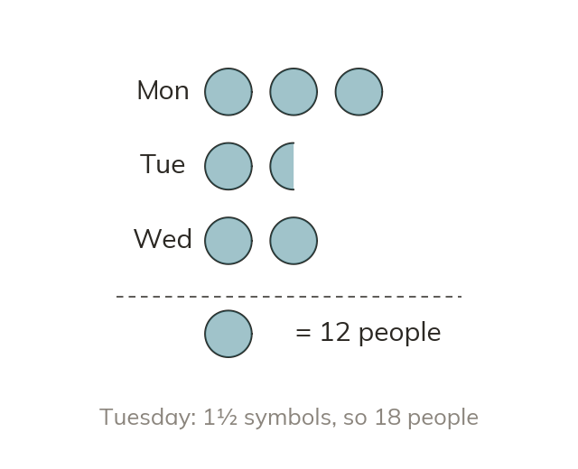
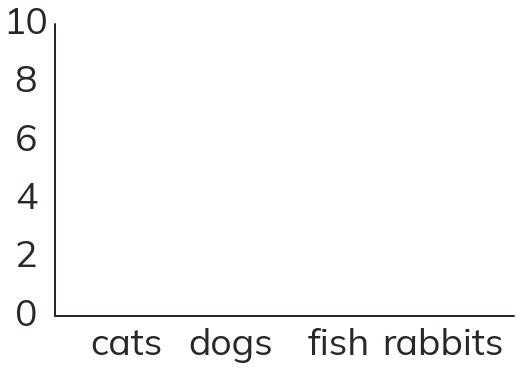
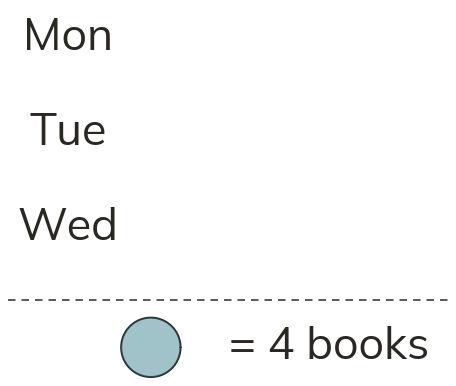
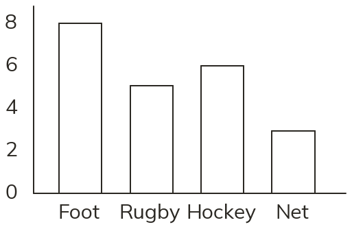
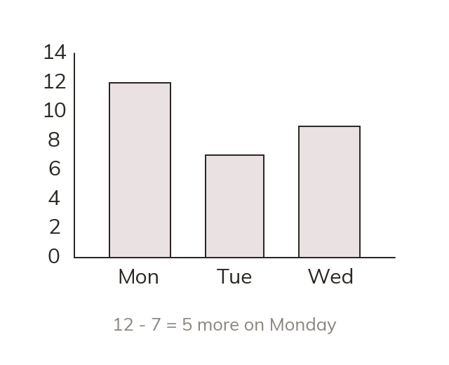
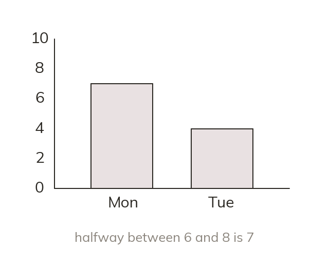
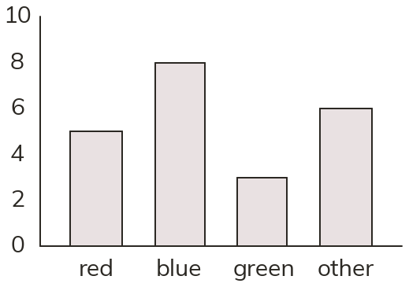
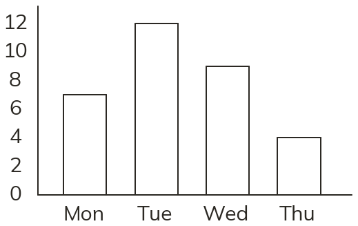

Height shows frequency
In a bar chart the height of each bar shows its frequency. The bars are equal in width with equal gaps, and the scale starts at zero.
Charts turn a table of numbers into a picture that can be read at a glance. Today we draw and read bar charts and pictograms.
Work down the page at your own pace. Write every answer in your book first, then click to check it.
Read each card, then follow the worked examples one step at a time.
In a bar chart the height of each bar shows its frequency. The bars are equal in width with equal gaps, and the scale starts at zero.

A pictogram repeats a symbol to show each frequency. The key says what one whole symbol stands for. Part of a symbol stands for that fraction.




Pick an answer. If it's wrong, the feedback tells you which mistake it was.

Read each card, then follow the worked examples one step at a time.

Each frequency is read from the top of its bar across to the scale. A difference subtracts two frequencies, and a total adds them.

A bar can end between two gridlines. Judge where it sits on the scale. With steps of 2, halfway between 6 and 8 is 7.

Pick an answer. If it's wrong, the feedback tells you which mistake it was.

Finished? Next lesson: 10.23.2 Dual and Composite Bar Charts.
Log in, then search for a code to practise that skill.